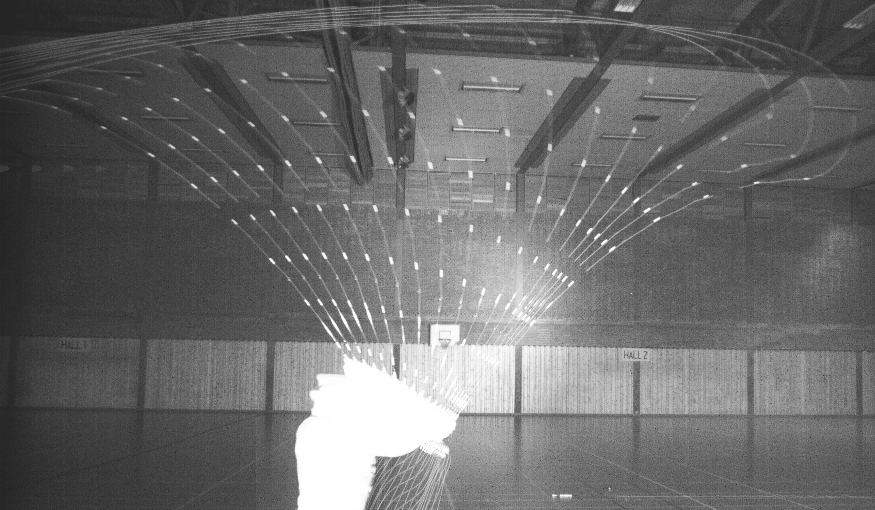

Fly cast simulator documentation¶
Python package and applications for simulating flycasting.
flycastsim is a Python library, and (in the future) a set of command line
scripts/programs for simulating flycasts.
Introduction¶
This is the start of an open and free fly casting simulator.
The simulator is both a Streamlit app and a library which you can use and extend as you like.
The simulator and library is a work in progress which will be developed in an ad-hock fashion when I have the time and inspiration.
At the moment the simulator contains:¶
A simple 1-D model for casting
The following is planned but not implemented:¶
A fly line dynamics model
A fly rod dynamics model
A linked line and rod model
The full source code is available on GitHub https://github.com/grunde73/flycastsim.
Quickstart¶
In order to run the app you’ll need a working Python 3 installation/environment with pip for package installation. Using pyenv and/or Conda is highly recommended for separation of Python versions and environments.
The following will usually work on (proper) UNIX based systems…
From the terminal do:
git clone git@github.com:grunde73/flycastsim.git
cd flycastsim
pip install -r requirements.txt
streamlit run streamlit_app.py
Which will launch the app in your default browser. The instructions
above will also install the flycastsim package in your Python environment,
examples of its use is found in the flysim_examples.ipynb Jupyter
notebook.
Disclaimer¶
“Essentially, all models are wrong, but some are useful.”
George E. P. Box
Remember, models are just models. So be critical and aware of the limitations and assumptions of all models, including the ones found here :-D